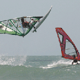

|

| Kto latem jezdzi do Brazylii? |
| Jak tam dotrzec? |
| Jericoacoara |
| Baza |
| Wiatr |
| Spot |
| Zdrowie |
| Jedzenie i wrazenia |
| Co poza windurfingiem? |
| Statystyki |
Jericoacoara to pod względem wiatru jedno z najlepszych miejsc w Brazylii.Zawdzięcza to stałemu, silnemu wiatrowi wiejącemu od Afryki. Podczas gdy większa część wybrzeża prowincji Cerea biegnie w kierunku SE do NW to e Jeri biegnie ono E do W równolegle do równika ijest w idealnej linii do wiatru, który dociera tam z pełną siłą, nie napotykając po drodze na żadne przeszkody.
Wiatr w Jeri to zarówno wiatr stały jak i wzmacniany termiką. Działa począwszy od sierpnia do stycznia-lutego.
Dla tych co lubią bawić się w nocy i długo spać mam dobrą wiadomość - wiatr w Jeri nie należy do rannych ptaszków. Rano wieje nie za mocno, dając szansę początkującym. Tak koło godziny 10.30-11 zaczyna się odkręcać na kierunek właściwy i w tempie imponującym włącza pełną moc.
Przed chwila kompletna cisza, po 5 minutach widać z dala białe grzywki, a za pól godzinie wieje. Apogeum osiąga kolo godziny 15-16 i wieje do zmroku (tzn. ~18:00 – strefa równikowa).
Byliśmy tam 12 dni od 16 do 28 sierpnia i pływaliśmy 12 dni.
Największe żagle jakich używaliśmy to 5.3 m2. Najmniejsze 3.8-4.2m2
W Jericoacoarze nie są potrzebne buty ani pianki.
Co trzeba umieć, żeby skorzystać z tego miejsca?
W pełni trzeba mieć opanowany start z wody i najlepiej rufę na płaskiej wodzie. Można wtedy doskonalić rufy na fali, trenować skoki i próbować pierwszych jazd na fali.
Przy odpływie woda w zatoce jest bardziej płaska co daje czas na freestyle, wraz z przypływem fala się zwiększa. Zawsze można wypłynąć z zatoki, gdzie swell generuje ładne rampy do skoków, a dobrze zrobiony zwrot na zboczu fali daje dużo przyjemności.
Pan W |
|
|